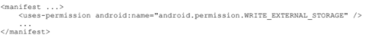

Es necesario guardar información sobre el estado de una aplicación Android cuando se encuentra en el método onPause() para que no se pierda el progreso del usuario. Para ello existen 3 opciones de almacenamiento:
• Guardar pares claves-valor de tipos de datos simples en un archivo de preferencias compartidas.
• Guardar archivos arbitrarios en el sistema de archivos de Android.
• Utilizar bases de datos administradas por SQLite.
SharedPreferences
Se utiliza cuando se quiere guardar colecciones pequeñas de pares clave-valor, para ello se utiliza el objeto el cual tiene asociado un archivo que contiene pares clave-valor y proporciona métodos simples para leer y escribir dichos pares. Este objeto puede ser privado o compartido.
Para obtener un manejador de las preferencias compartidas existen dos métodos por el cual se puede hacer uso del manejador:
getSharedPreferences():
Se utiliza cuando se necesita múltiples archivos de preferencias compartidas identificados por el nombre, se lo puede llamar desde cualquier instancia de Context en la app.
getPreferences():
Se utiliza cuando se necesita utilizar un solo archivo de preferencias compartidas para la actividad, no se necesita indicar un nombre y se lo puede llamar desde una instancia de Activity.
Almacenamiento Interno
• Para guardar archivos en caché se debe usar createTempFile().
• Para crear y escribir un archivo privado en el almacenamiento interno:
• Para leer un archivo desde almacenamiento interno:
• getFilesDir(): obtiene la ruta de acceso absoluta al directorio de sistema de archivos.
• getDir(): crea un directorio dentro del almacenamiento interno
• deleteFile(): elimina un archivo guardado.
Almacenamiento Externo
WRITE_EXTERNAL_STORAGE: solicitar permiso al almacenamiento.

READ_EXTERNAL_STORAGE: leer el almacenamiento externo.
• Archivos públicos: disponibles para otras apps y el usuario. Cuando el usuario desinstala la app, estos archivos deben seguir disponibles.
• getExternalStoragePublicDirectory()
• Archivos privados: archivos que pertenecen a tu app y deben eliminarse cuando el usuario desinstala la app.
• getExternalFilesDir()
Esquema
El esquema es una declaración formal de la manera en la que la base de datos está organizada, se refleja en las instrucciones SQL que utilizas para crear la base de datos.
Clase Contract
Es un contenedor para constantes que definen nombres de URI, tablas y columnas, permite utilizar las mismas constantes en todas las clases del mismo paquete.
Crear una base de datos utilizando un asistente de SQL
Métodos de manipulación de información
La biblioteca de persistencias Room brinda una capa de abstracción para SQLite que permite acceder a la base de datos sin problemas y, al mismo tiempo, aprovechar toda la potencia de SQLite.
El caso práctico más común es almacenar en caché datos relevantes. De esa manera, cuando el dispositivo no puede acceder a la red, el usuario de todos modos puede explorar ese contenido mientras está desconectado. La biblioteca te ayuda a crear una memoria caché de los datos en un dispositivo que ejecute tu app.
• Base de datos: Contiene el titular de la base de datos y sirve como punto de acceso principal para la conexión subyacente a los datos persistentes y relacionales de tu app.
• Entidad: Representa una tabla dentro de la base de datos.
• DAO: Contiene los métodos utilizados para acceder a la base de datos.
Para cada entidad, se crea una tabla dentro del objeto Database asociado con el fin de retener los elementos. Debes hacer referencia a la clase de entidad a través del arreglo entities de la clase Database.
Cómo usar una clave primaria.
Cada entidad debe definir al menos 1 campo como clave primaria. Incluso cuando solo hay 1 campo, aún debes usar la anotación @PrimaryKey en él.
• Clave primaria compuesta
• Nombre diferente para la tabla
• Nombre diferente para una columna
Cómo ignorar campos
De forma predeterminada, Room crea una columna para cada campo que se define en la entidad.
• Campos no deseados
• Hereda campos de una entidad principal
Cómo admitir la búsqueda en el texto completo
Si la app requiere un acceso muy rápido a la información de la base de datos mediante la búsqueda en el texto completo (FTS), respalda tus entidades con una tabla virtual que use el módulo de extensión SQLite FTS3 o FTS4.
Columnas específicas del índice
Si la app debe admitir versiones de SDK que no permiten usar entidades respaldadas por tablas FTS3 o FTS4, igual puedes indexar algunas columnas de la base de datos para agilizar las consultas.
Como SQLite es una base de datos relacional, puedes especificar relaciones entre entidades. Aunque la mayoría de las bibliotecas de asignación relacional de objetos permiten que los objetos de entidad se hagan referencia entre sí, Room lo prohíbe explícitamente.
Cómo definir relaciones de uno a uno
En las relaciones de uno a uno entre dos entidades, cada instancia de la entidad principal se corresponde exactamente con una instancia de la entidad secundaria y viceversa.
Cómo definir relaciones de uno a varios
En las relaciones de uno a varios entre dos entidades, cada instancia de la entidad principal corresponde a cero o más instancias de la entidad secundaria, pero cada instancia de la entidad secundaria solo puede corresponder una instancia de la entidad principal.
Cómo definir relaciones de varios a varios
En las relaciones de varios a varios entre dos entidades, cada instancia de la entidad principal corresponde a cero o más instancias de la entidad secundaria y viceversa.
El siguiente paso depende de cómo quieras consultar las entidades relacionadas.
• Si quieres consultar listas de reproducción y un listado de las canciones correspondientes por cada lista de reproducción, crea una clase de datos nueva con un objeto Playlist único y un listado de todos los objetos Song que incluye la lista de reproducción.
• Si quieres consultar canciones y un listado de las listas de reproducción correspondientes por cada canción, crea una clase de datos nueva con un objeto Song único y un listado de los objetos Playlist en los que se incluye la canción.
Cómo definir relaciones anidadas
Es posible que, en ocasiones, debas consultar un conjunto de tres o más tablas relacionadas entre sí. En ese caso, definirías relaciones anidadas entre las tablas.
Primero, modela la relación entre dos de las tablas del conjunto como lo harías normalmente, con una clase de datos y la anotación @Relation. Después de definir una clase de datos que represente esa relación, crea otra clase de datos que modele la relación entre otra tabla del conjunto y la primera clase de relación, y "anida" la relación existente dentro de la nueva.